最低初温约-16.4 ℃；数值分界(-16.425781, -16.420898] ℃。端部第1、5片为瓶颈。
| 策略 | 参数 | 启动 / s | 电荷 / C·cm⁻² | 峰值电流 | 最低电压 / V | 最大冰分数 | 结果 |
|---|---|---|---|---|---|---|---|
| 恒流 | j=0.5 | 16.3956 | 8.19782 | 0.500 | 0.497135 | 0.019578 | 成功 |
| 线性升载（有限范围） | a=2.5，jp=0.5，tp=0.2 s | 16.5021 | 8.20104 | 0.500 | 0.497143 | 0.019598 | 成功 |
| 三段阶梯（退化） | j1=j2=j3=0.5；t1=8 s，t2=16 s | 16.3956 | 8.19782 | 0.500 | 0.497135 | 0.019578 | 成功 |
线性升载行仅对应tp≥0.2 s的有限搜索范围，题目没有斜率上限；继续提高斜率时趋近恒流。三档相等时阶梯退化为恒流。冰体积分数包含膜冰。
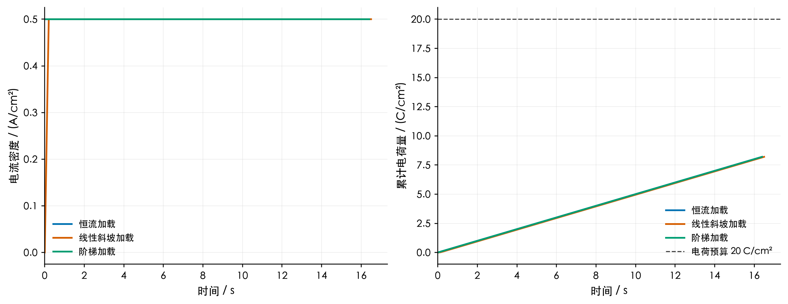
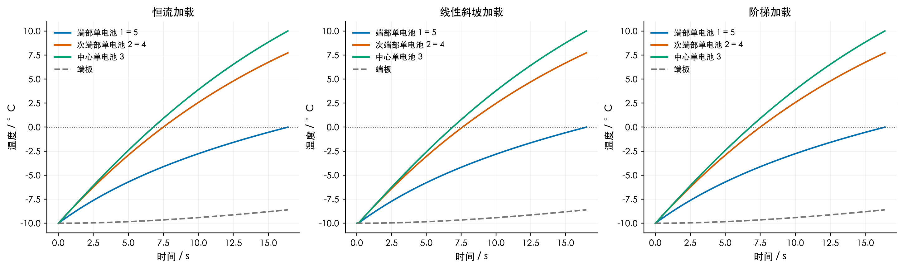
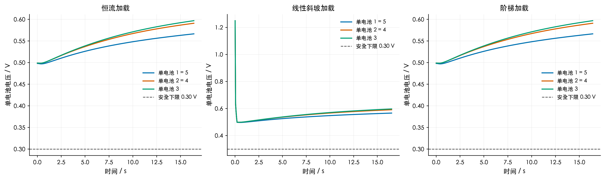
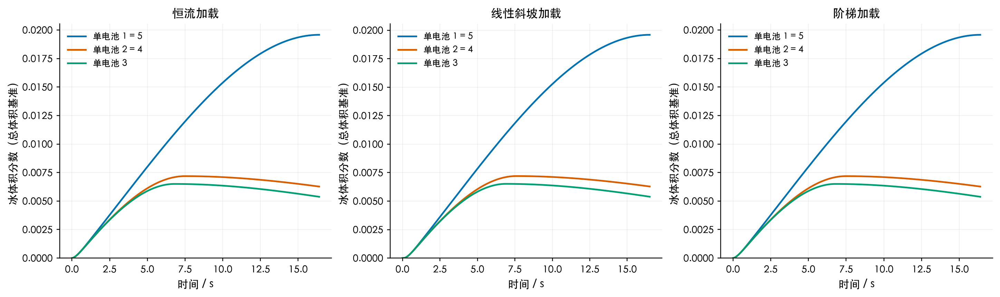
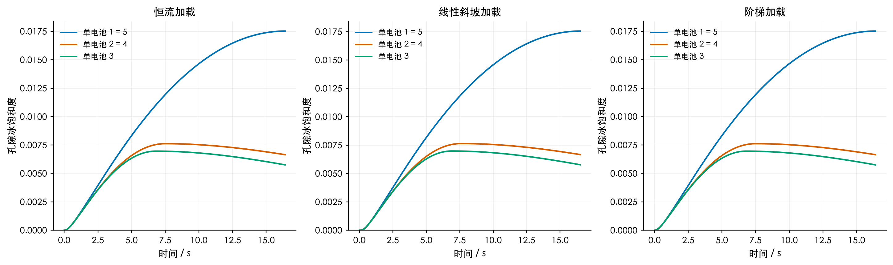
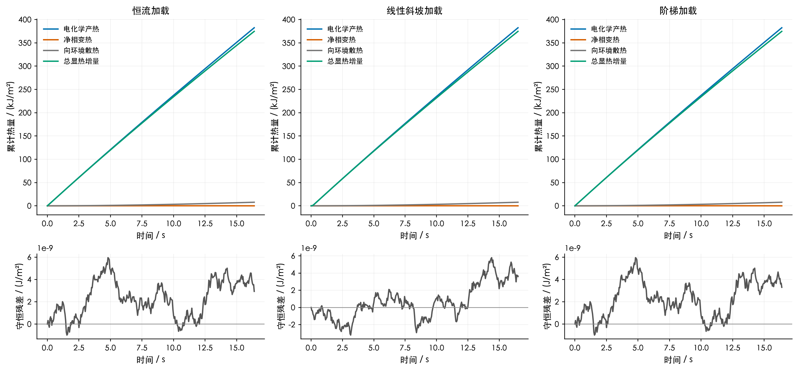
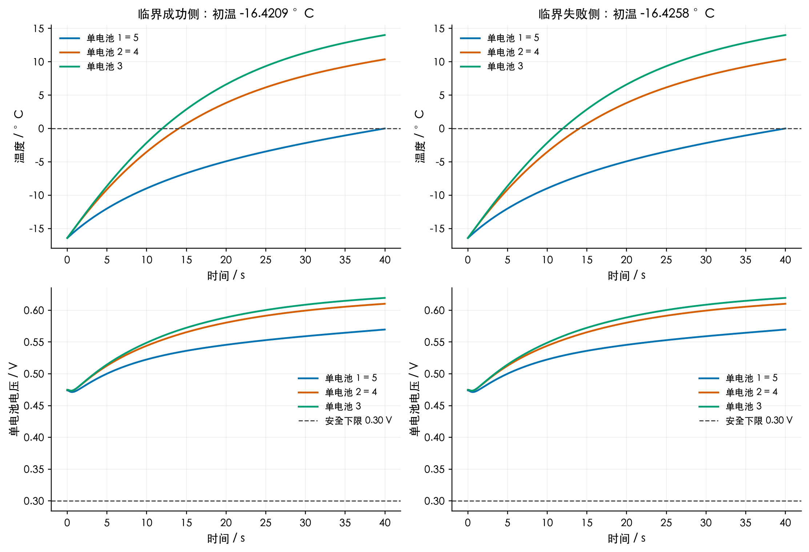
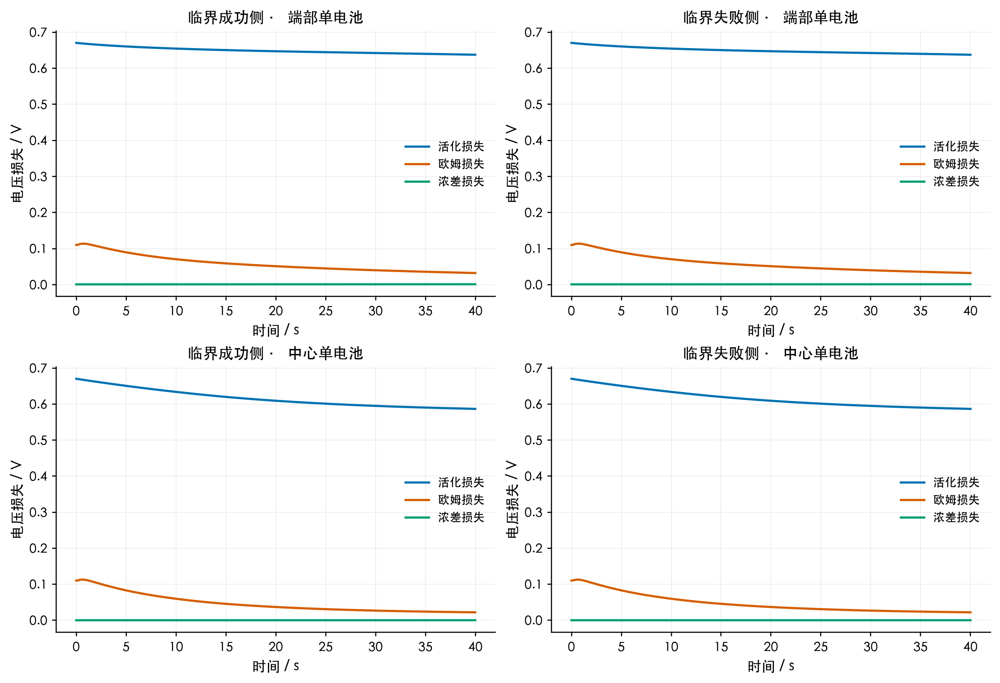
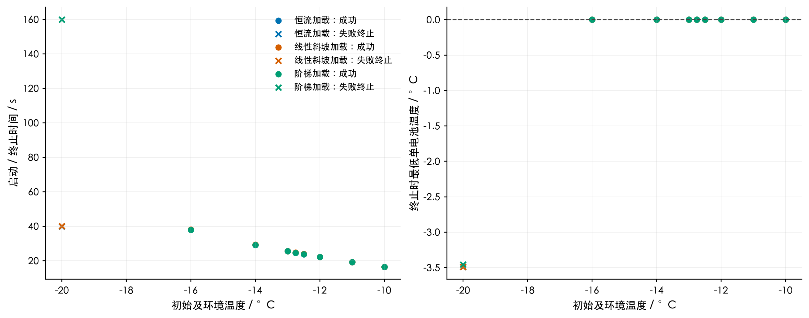
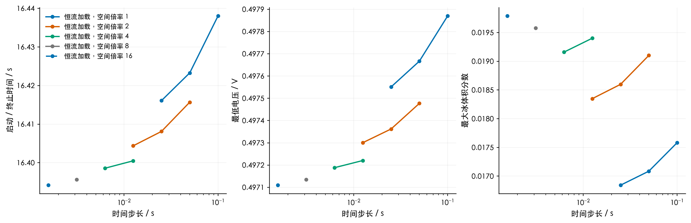
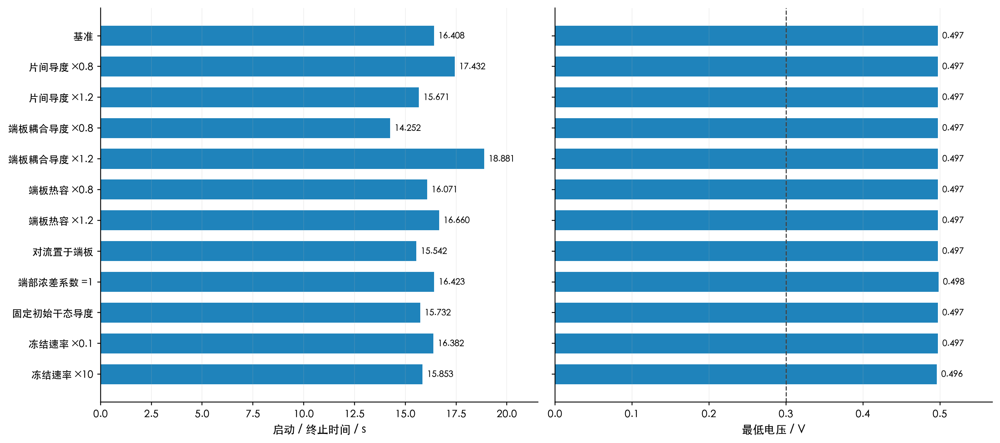
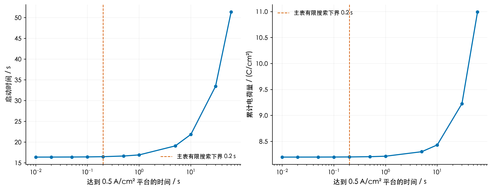